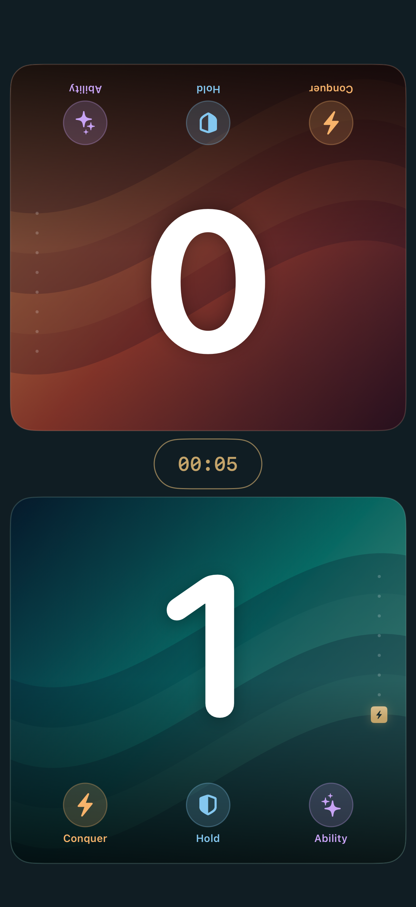
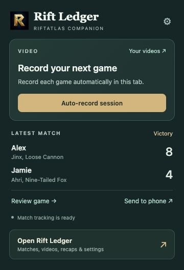
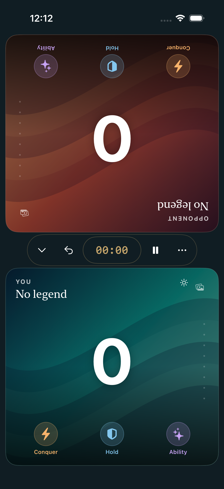
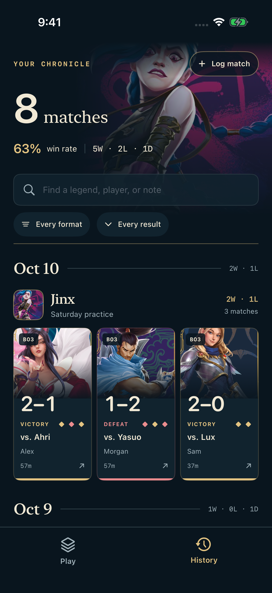
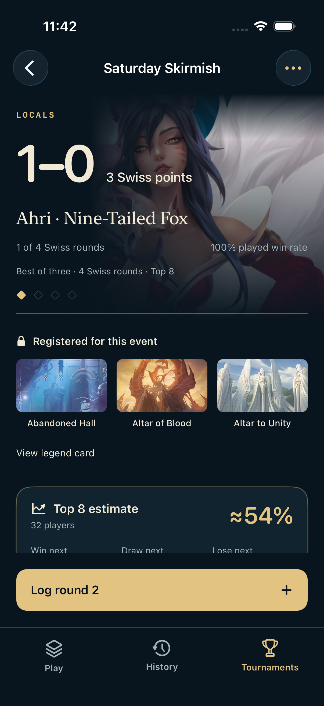

Every matchup,
remembered.
Match results and turn timing save automatically while you play. Review your games, rate opponent experience, and look back at your daily session.
At the table. On RiftAtlas.
Keep score at the table with the iOS app. Capture your RiftAtlas matches with the browser extension. Build a history worth coming back to.
Free · No ads · No account required

RiftAtlas browser companion
Your matches, replays, and highlights, saved on your computer. A small popup to record and confirm your match. A full page for your history, replays, and settings.
Download extension How to install it ↘
Match results and turn timing save automatically while you play. Review your games, rate opponent experience, and look back at your daily session.
Enable optional video recording once per tab session. Watch on a full page, jump to turns and highlights, and see match stats beside the video.
Drag a clip's edges on a visual timeline, preview it, and save. Search your video library or select several recordings to delete together.
Up to 4K · 60 fps targetChoose resolution and frame rate. Actual capture depends on your tab size and computer.
Your audio, your choiceInclude tab sound and an optional selected microphone.
Local storage, your limitChoose a cap up to 50 GB. Videos stay local and are never deleted automatically.
Start here
This beta is installed manually, outside the Chrome Web Store. No account or subscription is needed. Chrome installation guide ↗
Already installed? Replace the files in your existing extension folder, then click Reload in Chrome's extensions page between games. Refresh RiftAtlas afterward.
RiftLedgerCompanion folder somewhere permanent on your computer.Yes, if you have the Rift Ledger iOS prototype installed. Send one result by QR code, or export several reviewed matches as a JSON file and import it on your phone. Video files stay on your computer unless you download and transfer them yourself.
Match statistics are captured while the extension is enabled. Video requires your action on the RiftAtlas tab. Turn on One-click auto-record in Recording settings to arm a session with one toolbar click. Closing that tab ends the session; a new tab needs another click.
Match records, recordings, clips, session notes, and preferences are stored locally. The extension has no developer-operated upload service. Microphone recording is off by default. Export anything you want to keep before removing the extension.
Inside Rift Ledger
Actual screens from the working prototype, with sample matches and results.
Record Conquer, Hold, and Ability points with a tap. A gold point stack keeps the score readable, while the timer sits between both players.
You resolve cards and effects at the table. The app records your decisions and asks before finishing a game.

Keep the result, the matchup, and the details you want to remember. Your personal chronicle brings completed matches together with illustrated legends and a running record.
History stays on your device. The records shown here are demonstration data.

Register your legend and three battlefields, set the match format and event structure, and log results between rounds.
Cut estimates are approximate. They do not use actual standings, pairings, or tiebreakers and are not an official tournament result.

About the prototype
Rift Ledger is in development for iPhone and iPad on iOS 17 or later. This page documents the working prototype; a public App Store download is not yet available.
The app has no ads, subscriptions, required account, or developer-operated backend. Match records and tournament journals are stored locally. Shared matches send game data to the opponent you connect to; notes stay private. Export a backup before removing the app.
Players control cards, battlefield control, and rules decisions at the table. The app manually records points and includes confirmations for final points, results, and concessions. It does not provide a playable digital board or automated card resolution.
Riot approval has not yet been obtained. The prototype's card references, artwork delivery, and features are subject to Riot's review before app distribution. Screenshots demonstrate the proposed experience and use sample records.
Rift Ledger was created under Riot Games' "Legal Jibber Jabber" policy using assets owned by Riot Games. Riot Games does not endorse or sponsor this project. Card artwork © Riot Games; individual artist credits are available on the prototype's card references.
Riftbound digital tools policy ↗